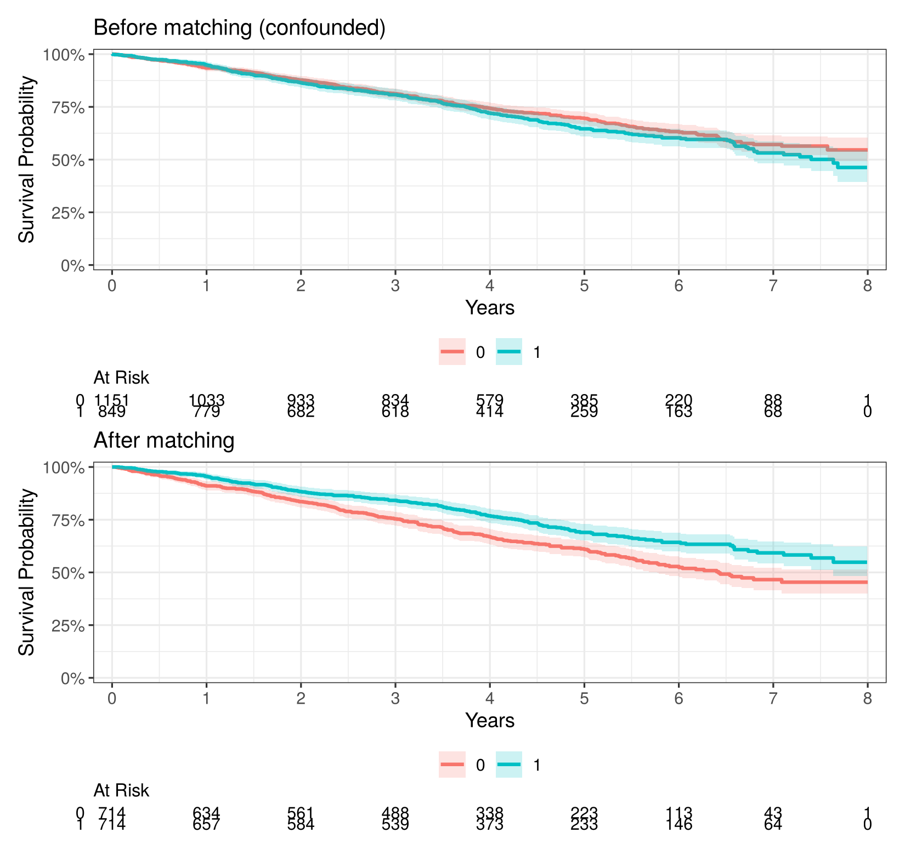
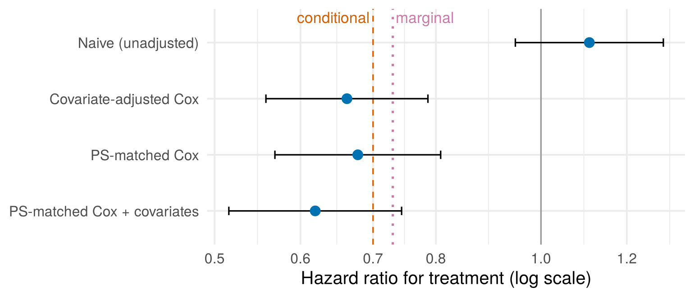

quiz([
{
"q": "What is a propensity score?",
"options": [
"The probability of being treated, given the measured covariates",
"The probability of dying during follow-up",
"A measure of how imbalanced two groups are",
"The predicted survival time"
],
"answer": 0,
"why": "It combines all the measured confounders into one number, each patient's chance of being treated. Matching on it balances those confounders.",
"hints": [
"",
"The propensity score is about treatment, not the outcome. Outcomes play no part in it.",
"That's the SMD.",
"Survival times play no part in the propensity score."
]
},
{
"q": "After matching, which result tells you the matching worked?",
"options": [
"Every covariate has |SMD| below 0.1",
"Treated and untreated patients have the same survival",
"Every covariate has a p-value above 0.05",
"Every treated patient found a match"
],
"answer": 0,
"why": "Balance is judged by SMDs, which don't depend on sample size. Outcomes shouldn't be looked at until the design is settled.",
"hints": [
"",
"Outcomes play no part in judging the matching. That's the point of settling the design first.",
"p-values depend on sample size, so they're a poor guide to balance.",
"Keeping everyone can mean accepting poor matches. Balance is what matters."
]
}
])7 Putting it together: a matched survival analysis
Warm-up: remember Chapters 5 and 6?
Two quick questions to bring back the key ideas from last time.
This chapter runs a complete analysis of the simulated cohort (Section 5.2), from raw data to a reported treatment effect. You’ll need simulate_cohort() loaded, as in Chapter 5 (source("simulate_cohort.R")). The question is:
Among treated patients, does treatment reduce the hazard of death?
The true answer is built into the data: a conditional HR of 0.70. As you’ll see in Step 4, the matched analysis estimates a slightly different quantity, whose true value is about 0.73.
7.1 Step 1: design (no outcomes yet)
cohort <- simulate_cohort(n = 2000, seed = 2026)
m_out <- matchit(
treated ~ age + female + diabetes + bmi + smoker,
data = cohort, method = "nearest", distance = "glm",
link = "linear.logit", caliper = 0.2
)
# Balance check: every |SMD| should be < 0.1
bal.tab(m_out, binary = "std", thresholds = c(m = 0.1), un = TRUE)#> Balance Measures
#> Type Diff.Un Diff.Adj M.Threshold
#> distance Distance 0.7633 0.0936 Balanced, <0.1
#> age Contin. 0.5073 0.0715 Balanced, <0.1
#> female Binary -0.1307 0.0285 Balanced, <0.1
#> diabetes Binary 0.3941 0.0712 Balanced, <0.1
#> bmi Contin. 0.3499 0.0351 Balanced, <0.1
#> smoker Binary 0.1359 -0.0124 Balanced, <0.1
#>
#> Balance tally for mean differences
#> count
#> Balanced, <0.1 6
#> Not Balanced, >0.1 0
#>
#> Variable with the greatest mean difference
#> Variable Diff.Adj M.Threshold
#> age 0.0715 Balanced, <0.1
#>
#> Sample sizes
#> Control Treated
#> All 1151 849
#> Matched 714 714
#> Unmatched 437 135matched <- match.data(m_out)This is the same balance table as in Chapter 6: Diff.Un is the SMD before matching and Diff.Adj is the SMD after matching. Every Diff.Adj is below 0.1, so balance is good and the design is settled. Only now do we look at survival.
7.2 Step 2: Kaplan–Meier curves before and after matching
Show the plotting code
p_before <- survfit2(Surv(time, status) ~ treated, data = cohort) |>
ggsurvfit(linewidth = 1) +
add_confidence_interval() +
add_risktable(risktable_stats = "n.risk") +
scale_ggsurvfit(x_scales = list(breaks = 0:8)) +
labs(title = "Before matching (confounded)", x = "Years")
p_after <- survfit2(Surv(time, status) ~ treated, data = matched) |>
ggsurvfit(linewidth = 1) +
add_confidence_interval() +
add_risktable(risktable_stats = "n.risk") +
scale_ggsurvfit(x_scales = list(breaks = 0:8)) +
labs(title = "After matching", x = "Years")
patchwork::wrap_plots(ggsurvfit_build(p_before), ggsurvfit_build(p_after), ncol = 1)
Before matching, the treated group seems to do slightly worse, because they were older and sicker. After matching, the comparison is like for like and the benefit appears.
7.3 Step 3: estimate the hazard ratio
In the matched sample we fit a Cox model with treatment only. Two details matter:
weights = weights: these are all 1 here, but they are needed for matching with replacement or with variable ratios. Including them always is a good habit.robust = TRUE, cluster = subclass: a cluster-robust (sandwich) standard error. This allows for the fact that matched pairs are similar (Austin 2014). It’s called a sandwich because of the shape of its formula: a filling (how much the data actually vary) between two identical slices of “bread” (from the usual, model-based formula).
cox_matched <- coxph(Surv(time, status) ~ treated,
data = matched, weights = weights,
robust = TRUE, cluster = subclass)
summary(cox_matched)#> Call:
#> coxph(formula = Surv(time, status) ~ treated, data = matched,
#> weights = weights, robust = TRUE, cluster = subclass)
#>
#> n= 1428, number of events= 485
#>
#> coef exp(coef) se(coef) robust se z Pr(>|z|)
#> treated -0.38908 0.67768 0.09199 0.08980 -4.333 1.47e-05 ***
#> ---
#> Signif. codes: 0 '***' 0.001 '**' 0.01 '*' 0.05 '.' 0.1 ' ' 1
#>
#> exp(coef) exp(-coef) lower .95 upper .95
#> treated 0.6777 1.476 0.5683 0.8081
#>
#> Concordance= 0.552 (se = 0.012 )
#> Likelihood ratio test= 18.14 on 1 df, p=2e-05
#> Wald test = 18.77 on 1 df, p=1e-05
#> Score (logrank) test = 18.11 on 1 df, p=2e-05, Robust = 18.57 p=2e-05
#>
#> (Note: the likelihood ratio and score tests assume independence of
#> observations within a cluster, the Wald and robust score tests do not).Check the proportional hazards assumption for this model too:
cox.zph(cox_matched)#> chisq df p
#> treated 0.768 1 0.38
#> GLOBAL 0.768 1 0.38p = 0.38, so there’s no evidence that the treatment HR changes over follow-up.
7.3.1 Practice: fill in the blanks
This is a live exercise: edit the code, click Run Code, and your answer is checked automatically. See Section 1.4.1 if you haven’t used one before.
The matched data from this chapter, matched, are already loaded. Replace each ______, then click Run Code.
NoteHint 1
The model contains only the treatment variable, treated. A robust SE needs robust = TRUE.
NoteHint 2
The matched pairs are identified by the subclass column. Time is in years, so 3 years is 3.
TipSolution
cox_m <- coxph(Surv(time, status) ~ treated, data = matched,
weights = weights,
robust = TRUE, cluster = subclass)
summary(cox_m)$conf.int
km_m <- survfit(Surv(time, status) ~ treated, data = matched)
summary(km_m, times = 3)Only treated goes in the model: matching has already balanced the confounders, so the model just compares the matched groups. (Adding the covariates as well is the “doubly robust” option in Exercise 7.1.) cluster = subclass tells R which patients form each matched pair. The HR is 0.68 (95% CI 0.57 to 0.81). 3-year survival is about 84% (95% CI 82% to 87%) with treatment and 75% (95% CI 72% to 79%) without.
7.4 Step 4: compare the approaches
How does the matched estimate compare with other ways of analysing the same data? We fit four Cox models:
- Naive: treatment only, in the full cohort. No adjustment at all.
- Covariate-adjusted: treatment plus all five confounders, in the full cohort (the Chapter 3 approach).
- PS-matched: treatment only, in the matched cohort (Step 3).
- PS-matched + covariates: matching and adjustment together. This is often called doubly robust, because it gives you two chances to get it right: if either the matching or the outcome model deals with the confounding well, the estimate should be close to the truth.
Show the code that fits the four models and builds the table
fits <- list(
"Naive (unadjusted)" =
coxph(Surv(time, status) ~ treated, data = cohort),
"Covariate-adjusted Cox" =
coxph(Surv(time, status) ~ treated + age + female + diabetes + bmi + smoker,
data = cohort),
"PS-matched Cox" = cox_matched,
"PS-matched Cox + covariates" =
coxph(Surv(time, status) ~ treated + age + female + diabetes + bmi + smoker,
data = matched, weights = weights, robust = TRUE, cluster = subclass)
)
results <- bind_rows(lapply(fits, \(f)
tidy(f, exponentiate = TRUE, conf.int = TRUE) |> filter(term == "treated")),
.id = "method") |>
select(method, HR = estimate, lower = conf.low, upper = conf.high, p.value) |>
mutate(n = sapply(fits, \(f) f$n), events = sapply(fits, \(f) f$nevent))
results |> mutate(across(HR:p.value, \(x) signif(x, 3)))#> # A tibble: 4 x 7
#> method HR lower upper p.value n events
#> <chr> <dbl> <dbl> <dbl> <dbl> <int> <dbl>
#> 1 Naive (unadjusted) 1.11 0.947 1.3 0.2 2000 629
#> 2 Covariate-adjusted Cox 0.662 0.558 0.787 0.00000266 2000 629
#> 3 PS-matched Cox 0.678 0.568 0.808 0.0000147 1428 485
#> 4 PS-matched Cox + covariates 0.619 0.515 0.744 0.000000301 1428 485Each row gives the HR for treatment from one method, with its CI, p-value, and the number of patients and deaths used.
Show the plotting code
results |>
mutate(method = factor(method, levels = rev(method))) |>
ggplot(aes(HR, method)) +
geom_vline(xintercept = 1, colour = "grey60") +
geom_vline(xintercept = 0.70, linetype = "dashed", colour = "#D55E00") +
geom_vline(xintercept = 0.73, linetype = "dotted", colour = "#CC79A7", linewidth = 0.8) +
geom_errorbar(aes(xmin = lower, xmax = upper), width = 0.15, orientation = "y") +
geom_point(size = 3, colour = "#0072B2") +
annotate("text", x = 0.70, y = 4.45, label = "conditional", colour = "#D55E00", hjust = 1.05) +
annotate("text", x = 0.73, y = 4.45, label = "marginal", colour = "#CC79A7", hjust = -0.05) +
scale_x_log10(breaks = c(0.5, 0.6, 0.7, 0.8, 1, 1.2)) +
labs(x = "Hazard ratio for treatment (log scale)", y = NULL) +
theme_minimal(base_size = 13)
The naive analysis gets the direction wrong. Both covariate adjustment and PS matching come close to the truth. Notice, though, that there are two “truths” on the plot, because the methods answer slightly different questions:
- The covariate-adjusted Cox model estimates a conditional HR: the effect of treatment for patients with the same age, sex, diabetes, BMI and smoking status. Its true value is 0.70, the number we built into the data.
- The PS-matched Cox model, with only
treated, estimates a marginal HR: the effect of treatment on average, across the kind of patients who were treated. Its true value here is about 0.73.
Hazard ratios have an odd property: even with no confounding at all, the average effect over a mixed group of patients is a little closer to 1 than the effect for any particular kind of patient. (This is called non-collapsibility.) Neither number is wrong. They answer different questions, so say which one you estimated (Austin 2014). The matched estimate (0.68) is well within sampling error of its truth (0.73).
Notice that the table shows only the HR for treatment. The covariate-adjusted models also give HRs for age, diabetes, BMI and so on, and it’s tempting to report and interpret those too. Don’t. Those variables are in the model to remove confounding of the treatment effect, and their own HRs don’t mean what they seem to. For example, in this cohort older patients are more likely to have diabetes, which is one of the ways age affects survival. The HR for age is adjusted for diabetes, so it leaves that pathway out: it isn’t “the effect of age”. Interpreting every HR in the model as an effect is known as the Table 2 fallacy (Westreich and Greenland 2013). The name comes from the usual layout of a paper: Table 1 describes the patients, and Table 2 reports the model, where every coefficient sits side by side as if they all meant the same thing. If you want the effect of another variable, it needs its own analysis, with its own confounders.
7.5 Step 5: absolute effects are easier to explain
HRs are relative. Clinicians and patients often find absolute survival differences easier to understand, e.g. “5-year survival was 69% with treatment and 61% without”. You can read these straight off the matched KM curves, using summary() as in Chapter 2:
km_m <- survfit(Surv(time, status) ~ treated, data = matched)
s5 <- summary(km_m, times = 5)
# The key numbers, one row per group
data.frame(group = s5$strata,
survival = round(s5$surv, 3),
lower = round(s5$lower, 3),
upper = round(s5$upper, 3))#> group survival lower upper
#> 1 treated=0 0.609 0.570 0.65
#> 2 treated=1 0.690 0.651 0.73summary() returns a list, and here we pick out the parts we need: the estimated 5-year survival in each group (treated=0 and treated=1), with the lower and upper limits of its 95% CI. Printing s5 itself shows the same numbers, plus the number at risk and the number of deaths.
7.6 Step 6: sensitivity to unmeasured confounding
Matching can’t fix confounders you didn’t measure (try the “Severity unmeasured” scenario in Section 5.7 again). So always ask: is there an important confounder we didn’t measure? Discuss it honestly in the limitations.
7.7 Reporting checklist
When writing up a PS-matched survival analysis, report:
The STROBE guidelines for observational studies are a useful framework.
7.7.1 Writing it up: an example
Here is how this chapter’s analysis might be written up. Adapt the bracketed details to your own study.
Methods. Propensity scores were estimated by logistic regression of treatment on age, sex, diabetes, BMI and smoking status. Each treated patient was matched to one untreated patient by nearest-neighbour matching without replacement on the logit of the propensity score, with a caliper of 0.2 standard deviations. Covariate balance was assessed with standardised mean differences (SMDs), with |SMD| < 0.1 taken to indicate good balance. In the matched cohort, the effect of treatment on mortality was estimated with a Cox proportional hazards model, using robust standard errors clustered on matched pairs. Analyses used R with the survival, MatchIt and cobalt packages.
Results. Of 849 treated patients, 714 were matched to 714 untreated patients. 135 treated patients had no untreated patient within the caliper and were excluded. After matching, all SMDs were below 0.1 (the largest was 0.07, for age). There were 485 deaths in the matched cohort. Treatment was associated with a lower hazard of death (HR 0.68, 95% CI 0.57 to 0.81, p < 0.001). Estimated 5-year survival was 69% (95% CI 65% to 73%) with treatment and 61% (95% CI 57% to 65%) without.
Quick quiz
Choose an answer to each question. You’ll get instant feedback and can change your answer as often as you like.
7.8 Exercise
7.8.1 Exercise 7.1
A new cohort, null_cohort, is loaded in each box. It was made with simulate_cohort(n = 5000, hr_treat = 1, seed = 1), so the true effect is null (HR = 1). The exercise has three parts, each checked separately. The first run downloads some packages and matches 5000 patients, so it may take a little while.
Part 1: naive and matched analyses
Fit the naive Cox model. Then match the patients, and fit the matched Cox model (make that the last line). What do the two analyses conclude?
NoteHint 1
Use the same caliper as before (0.2), and extract the matched data with match.data().
NoteHint 2
The matched pairs are identified by subclass.
TipSolution
coxph(Surv(time, status) ~ treated, data = null_cohort)
m_null <- matchit(treated ~ age + female + diabetes + bmi + smoker,
data = null_cohort, link = "linear.logit", caliper = 0.2)
md_null <- match.data(m_null)
coxph(Surv(time, status) ~ treated, data = md_null,
robust = TRUE, cluster = subclass)The naive analysis is badly wrong: HR ≈ 1.86. A treatment that does nothing looks like it nearly doubles the hazard of death. Matching removes most of that bias, bringing the HR down to about 1.21. But it doesn’t get all the way to 1: the CI (1.09–1.34) still excludes the null. Parts 2 and 3 look at why.
Part 2: balance and KM curves
The matched data, md_null, are ready in this box. Draw matched KM curves, then check balance (make the balance table the last line). Are any covariates still slightly imbalanced?
NoteHint 1
The usual threshold for |SMD| is 0.1.
TipSolution
survfit2(Surv(time, status) ~ treated, data = md_null) |>
ggsurvfit() +
add_risktable() +
labs(x = "Years")
bal.tab(m_null, binary = "std", thresholds = c(m = 0.1))All the SMDs are below 0.1, so by the usual rule of thumb the matching “passed”. But small imbalances remain (age ≈ 0.06, diabetes ≈ 0.07). These are strong predictors of death, so even small imbalances leave some residual confounding. Chance plays a part too: a fully adjusted Cox model on the whole cohort also gives about 1.09.
Part 3: doubly robust
Refit the matched Cox model with the five covariates added (“doubly robust”). What changes?
NoteHint 1
Add age + female + diabetes + bmi + smoker after treated.
TipSolution
coxph(Surv(time, status) ~ treated + age + female + diabetes + bmi + smoker,
data = md_null, robust = TRUE, cluster = subclass)Adding the covariates mops up much of the remaining confounding: HR ≈ 1.12, CI 1.00–1.25. Combining matching with adjustment like this is called doubly robust estimation: the matching and the outcome model each get a chance to deal with the confounding, so what one misses, the other can catch.
The lesson: matching reduces confounding but rarely eliminates it. For strong prognostic variables, aim for SMDs well below 0.1, and consider covariate adjustment in the matched sample as well.
7.9 Summary
Answering the question. Yes. In the matched cohort the hazard ratio was 0.68 (95% CI 0.57 to 0.81), about a 32% lower hazard of death with treatment. Estimated 5-year survival was 69% with treatment and 61% without.
7.10 Further reading
All of these are free to read online unless marked otherwise. The whole book’s reading list, grouped by topic, is in Appendix C.
- Austin (2014): How to estimate and report treatment effects from propensity score analyses with survival outcomes, including matched Kaplan–Meier curves and marginal hazard ratios.
- Elm et al. (2007): The STROBE reporting guideline for observational studies. Use its checklist when you write up an analysis like this one.
- Royston and Parmar (2013): More advanced. The restricted mean survival time, for when hazard ratios aren’t constant over time.
- Hernán and Robins (2020): Advanced. A free book on causal inference from observational data, for going deeper into confounding and how to design an observational analysis.